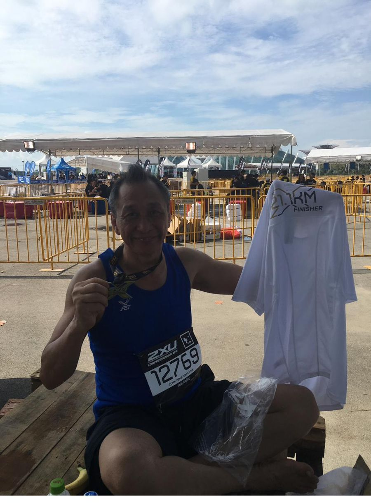
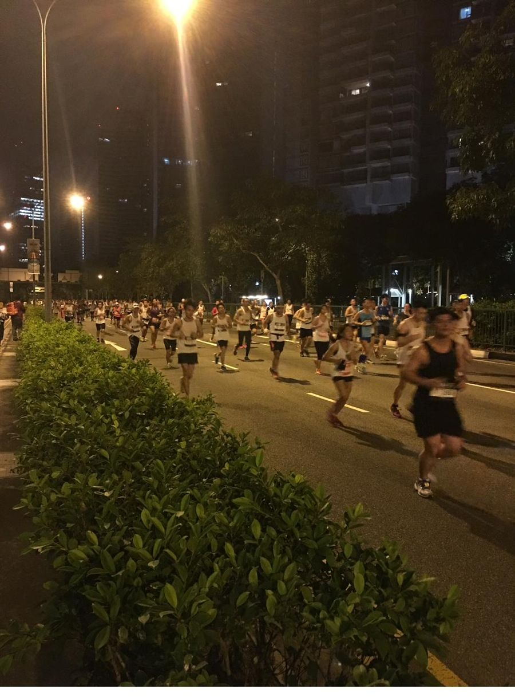
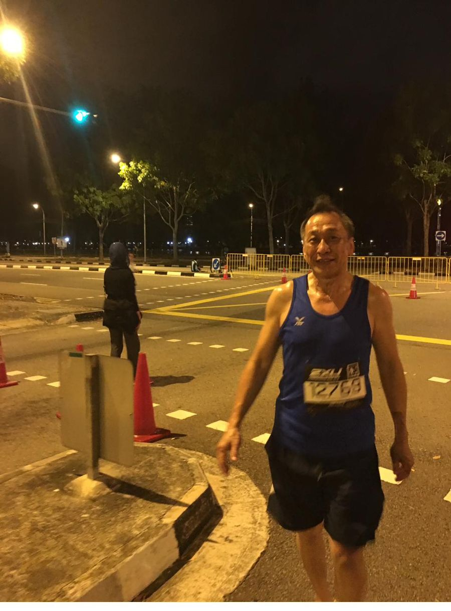
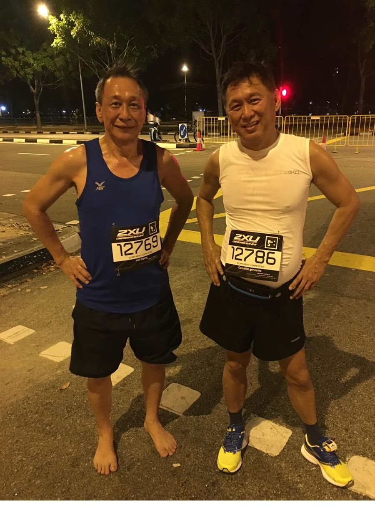
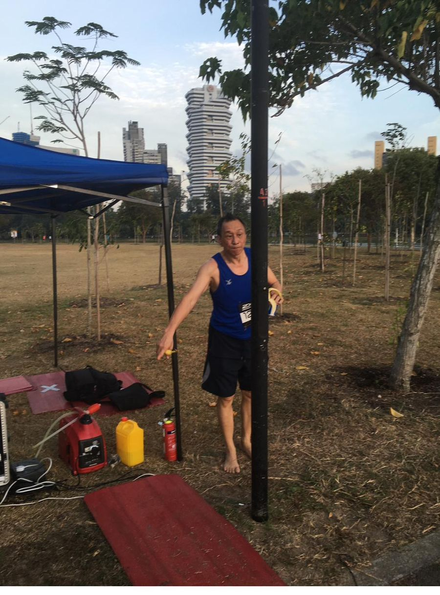
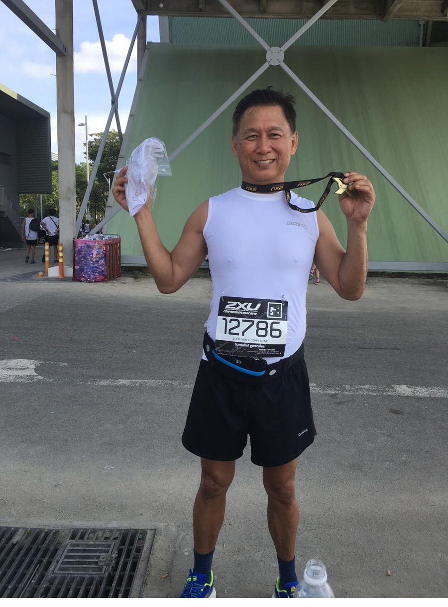
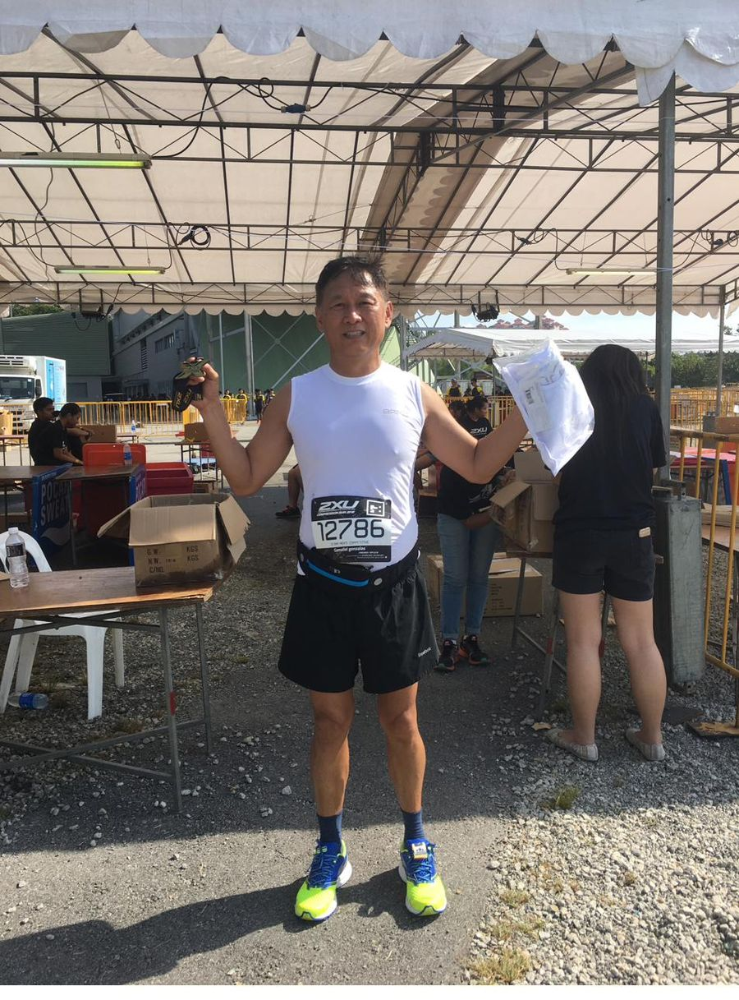

Today, while scrolling through old photos on my phone, I stopped at one taken in 2016. It brought back a powerful memory.
My good friend Jeremy from Indonesia and I had just completed the Singapore Half Marathon together. We crossed the finish line exhausted, sweaty, but incredibly proud. Back then, we looked young, energetic, and full of life. Looking at that photo now, I realised something important — exercise was one of the reasons we stayed healthy and youthful.

Exercise does not just add years to our life. It adds life to our years.


Now, in 2026, Jeremy and I are preparing to run another half marathon together. This time, our goal is different. We are not chasing speed, medals, or records. Our goal is simply to maintain our stamina, health, and friendship as we grow older.
But this journey is bigger than one race.

I have set myself a personal dream: In 2036, I still want to be strong enough to complete a half marathon. To achieve that dream, I know consistency matters more than intensity. So I am making a simple commitment to myself — once every month, I will join a 25km long walk or hiking session in Singapore, rain or shine, on either Saturday or Sunday.


Many people think staying fit becomes harder with age. Maybe it does. But giving up makes it impossible.
Ten years ago, I never imagined I could complete a half marathon. Yet one step at a time, I did it. That is why I believe the secret is not talent — it is consistency, discipline, and never stopping.
Age is just a number. As long as we keep moving, challenging ourselves, and taking care of our health, we can continue to live with strength, purpose, and joy.
Start small. Stay consistent. Your future self will thank you.
See you on the trails — and maybe at the next starting line.
🏃♂️✨👁️ Views: —